Ian Charles Carbonel
UI/UX Designer
ECOAST PRESENTS
Digital Museum
A Journey Through the Different Forms of Art
ECOAST PRESENTS
A Journey Through the Different Forms of Art
WELCOME TO
Explore the different manifestations of art.
ECOAST DIGITAL MUSEUM

GALLERY I

Juan Luna · 1884
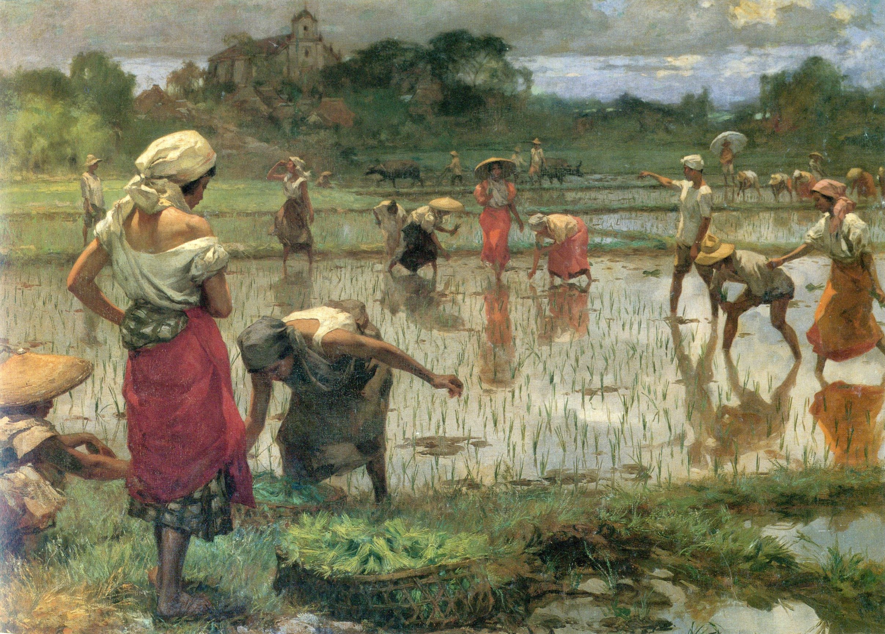
Fernando Amorsolo · 1921 (earliest known version)
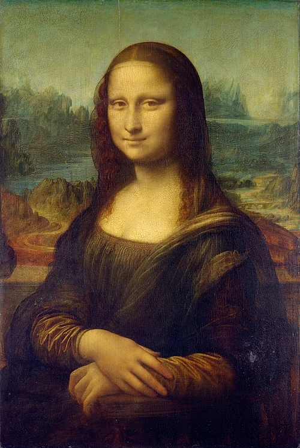
Leonardo da Vinci · c. 1503–1519
GALLERY II
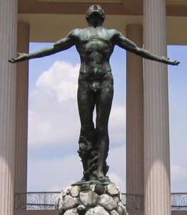
Guillermo E. Tolentino · 1935
Auguste Rodin · 1880 (original conception)
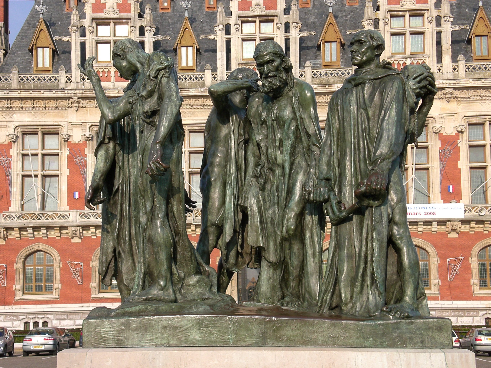
Auguste Rodin · 1889
GALLERY III
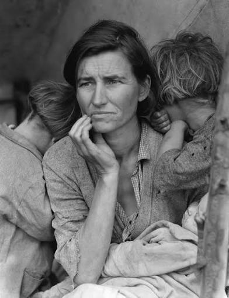
Dorothea Lange · 1936
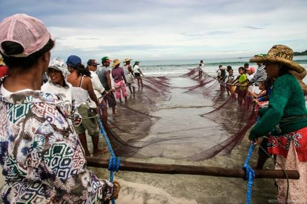
Roy Cruz · 2007
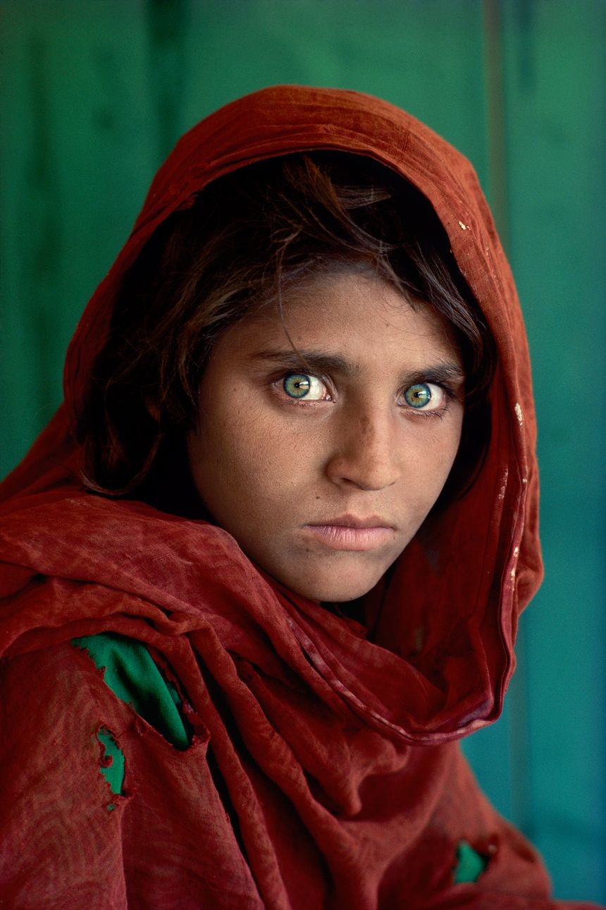
Steve McCurry · 1984
GALLERY IV
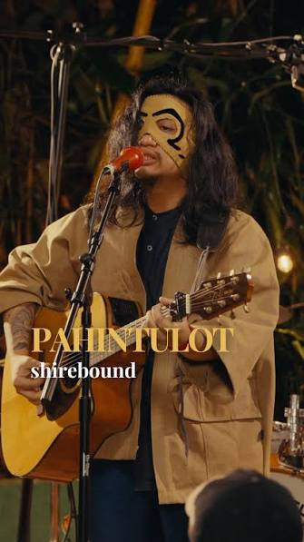
Iego Tan / Shirebound & Busking · 2019
Eric Clapton and Will Jennings · 1991
Taylor Swift · 2010
GALLERY V
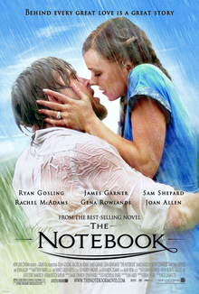
Nicholas Sparks · 1996
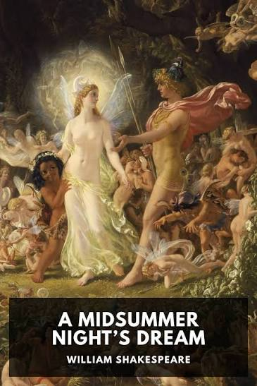
William Shakespeare · c. 1595–1596
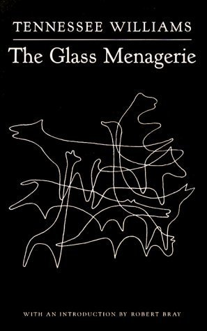
· 1944